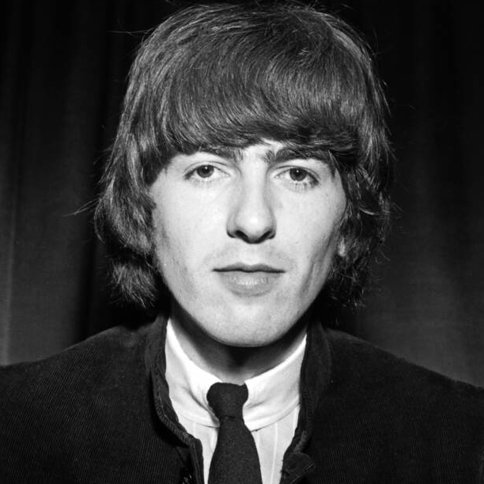
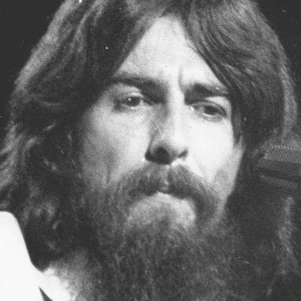
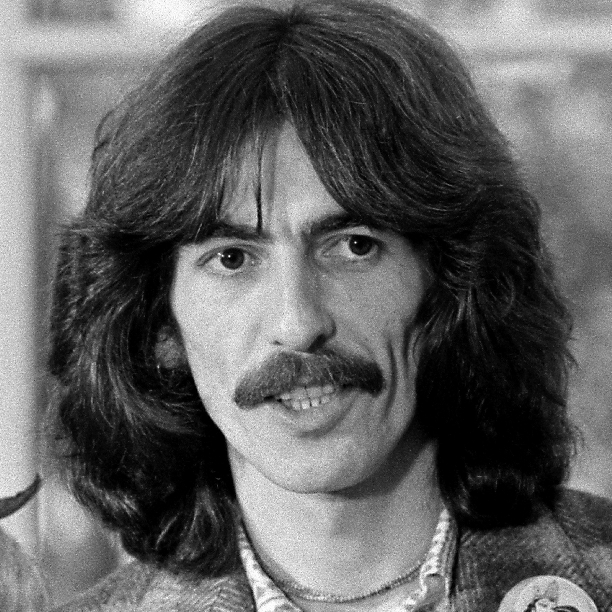

1. George Harrison (Liverpool, 25 febbraio 1943 – Los Angeles, 29 novembre 2001) è stato un cantautore, polistrumentista, compositore, attore, produttore cinematografico e discografico britannico.

2. Dal 1960 al 1970 è stato il chitarrista solista e cantante dei Beatles; dopo lo scioglimento del gruppo (il cui ultimo atto coincise, nel gennaio 1970, con la seduta di studio della canzone scritta da Harrison I Me Mine) ha intrapreso la carriera individuale, sia come musicista sia come produttore musicale e cinematografico. Fu anche un fondatore e membro del gruppo dei Traveling Wilburys.
 3. Tutti gli album contenevano generalmente due o più brani di sua composizione; molto celebri While My Guitar Gently Weeps, Something e Here Comes the Sun. Dopo lo scioglimento del gruppo realizzò il suo primo album solista, contenente molti brani che non erano stati pubblicati negli ultimi album dei Beatles, All Things Must Pass.
3. Tutti gli album contenevano generalmente due o più brani di sua composizione; molto celebri While My Guitar Gently Weeps, Something e Here Comes the Sun. Dopo lo scioglimento del gruppo realizzò il suo primo album solista, contenente molti brani che non erano stati pubblicati negli ultimi album dei Beatles, All Things Must Pass.

4. Harrison conobbe la cultura e la musica indiana nella seconda metà degli anni sessanta e ne divenne profondo estimatore; introdusse notevoli sonorità di origine indiana sia nei Beatles, sia nel lavoro solista. Assieme al musicista indiano Ravi Shankar organizzò, nell'agosto 1971, il celebre The Concert for Bangladesh, primo concerto benefico nella storia della musica.